列表只做索引，一条事实是一页详情，引用笔记、证据、关系和核验历史都在详情里。05 / 06 / 08 来自中间态（21 条）；最终态是 16 条，看 01。
01 事实库索引
16 行摘要：状态、全文、笔记/证据/关联计数；没有卡片内“打开笔记”。
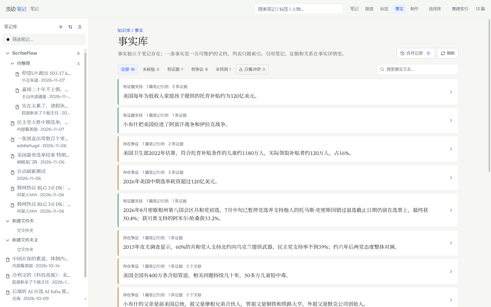
02 事实详情
全文、引用它的笔记（多 run quote）、证据、争议点数字对照、相关/冲突、核验历史、右栏操作。
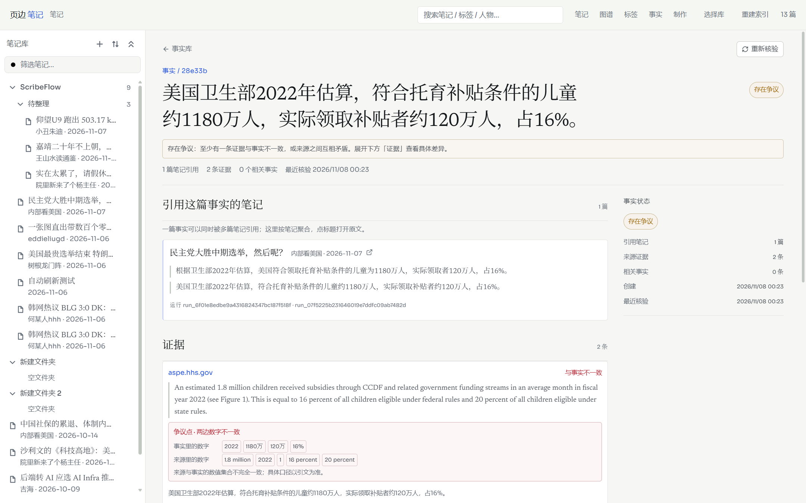
03 笔记事实栏
笔记右栏重构后的「事实」tab：状态、全文、来源数、关联数；整行进详情，定位为图标。
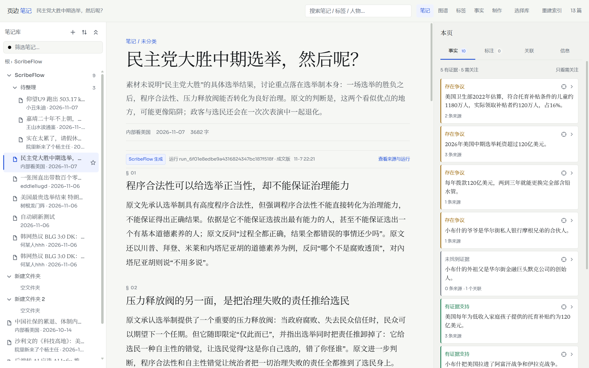
04 任务详情溯源
读事实库当前状态，不再读旧任务快照。
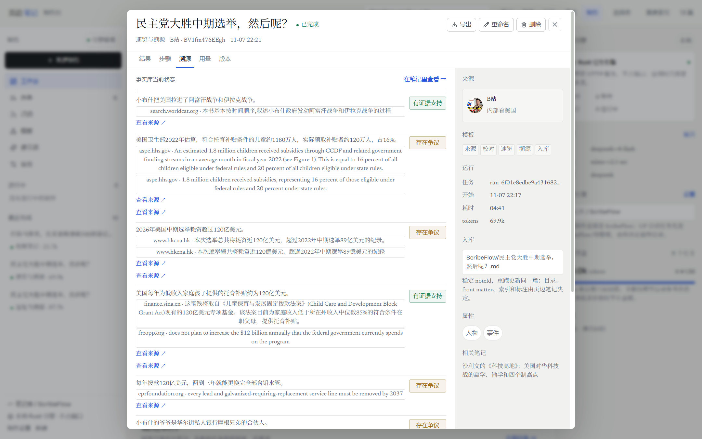
05 合并候选
中间态：same_as 候选出现合并入口。
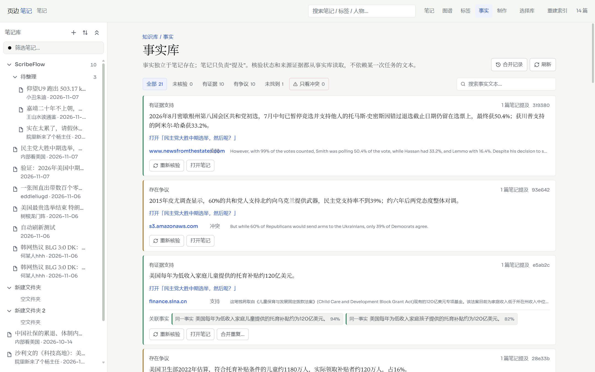
06 合并弹窗
保留/合并、双方状态、笔记数、词面重合。
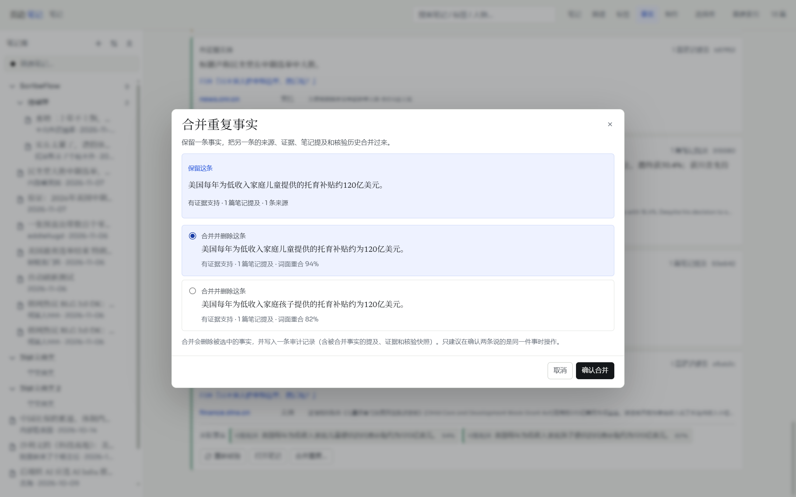
07 合并记录
5 条生效、1 条已撤销；可逐条撤销。
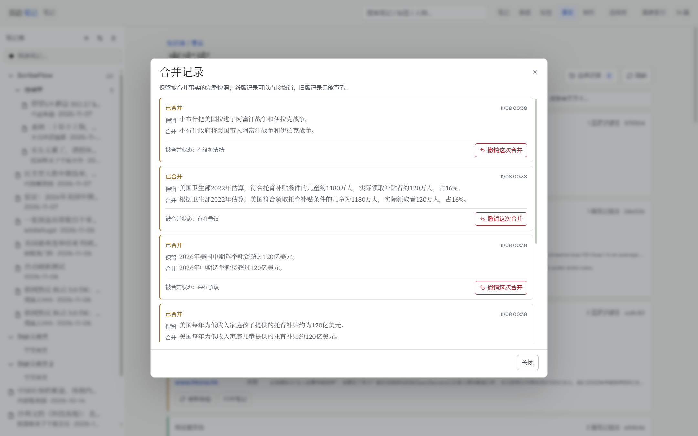
08 撤销合并
源事实、证据、mention、check 恢复。
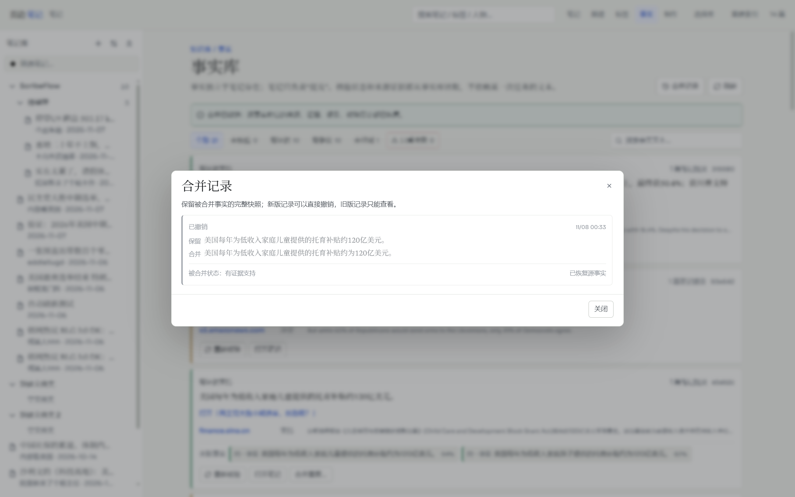
09 图谱事实层
13 篇笔记、16 条事实；事实按状态着色。
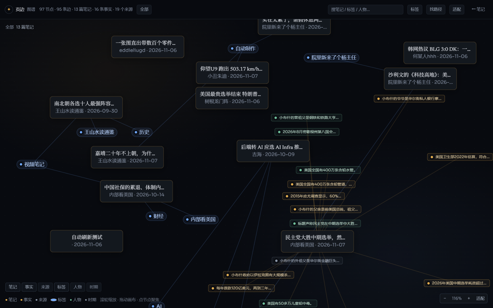
10 图谱来源层
来源为灰点，避免 URL 标签遮挡。
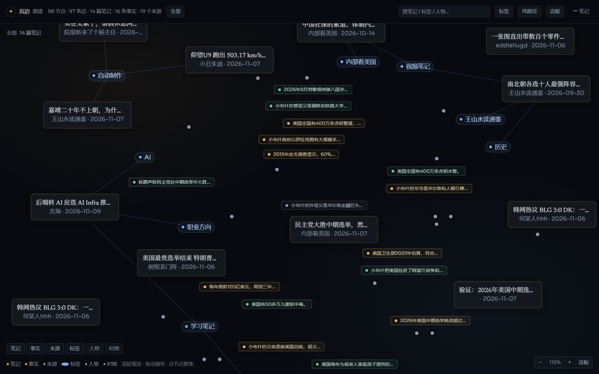
11 图谱事实面板
全文、状态、提及笔记、来源。
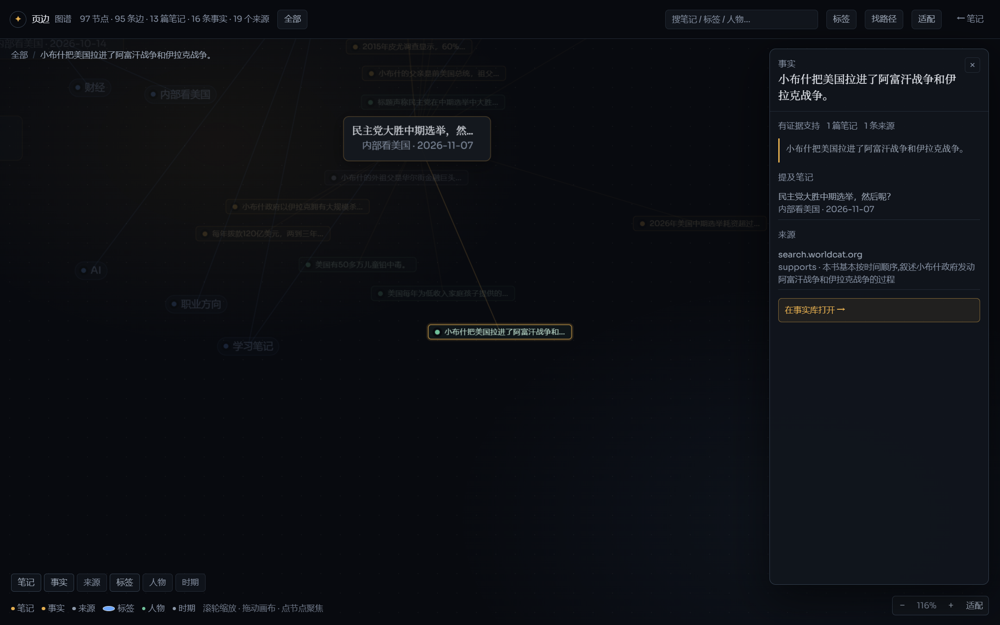
12 图谱来源面板
URL、关联事实、打开来源。
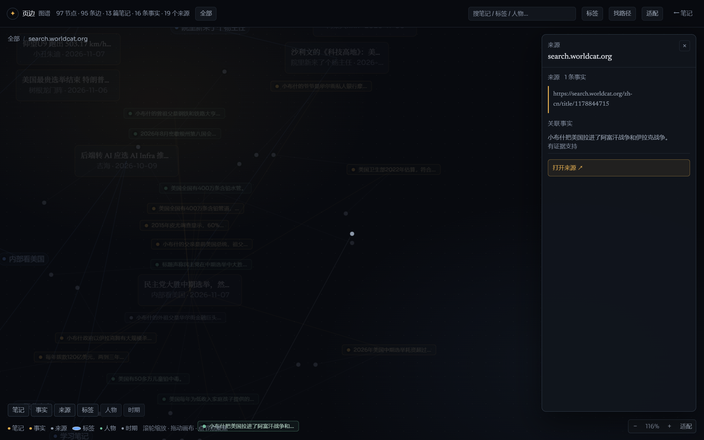
13 关联事实跳转
事实库目标卡高亮。
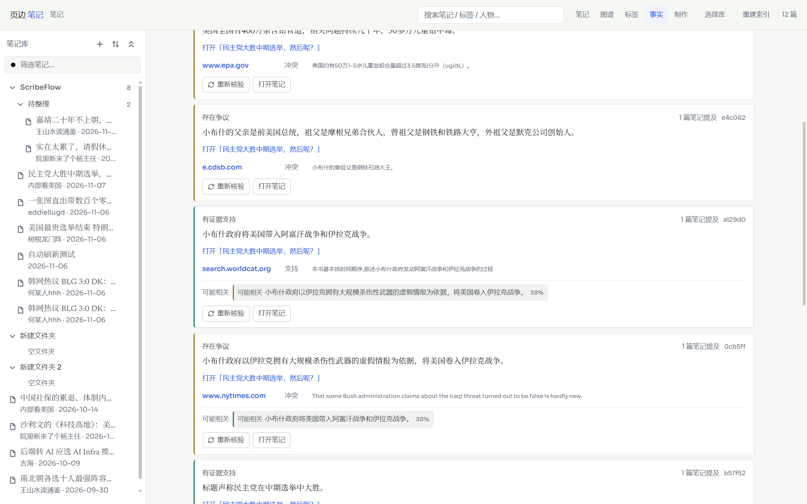
14 溯源参数
每条主张来源数、最多核查主张。
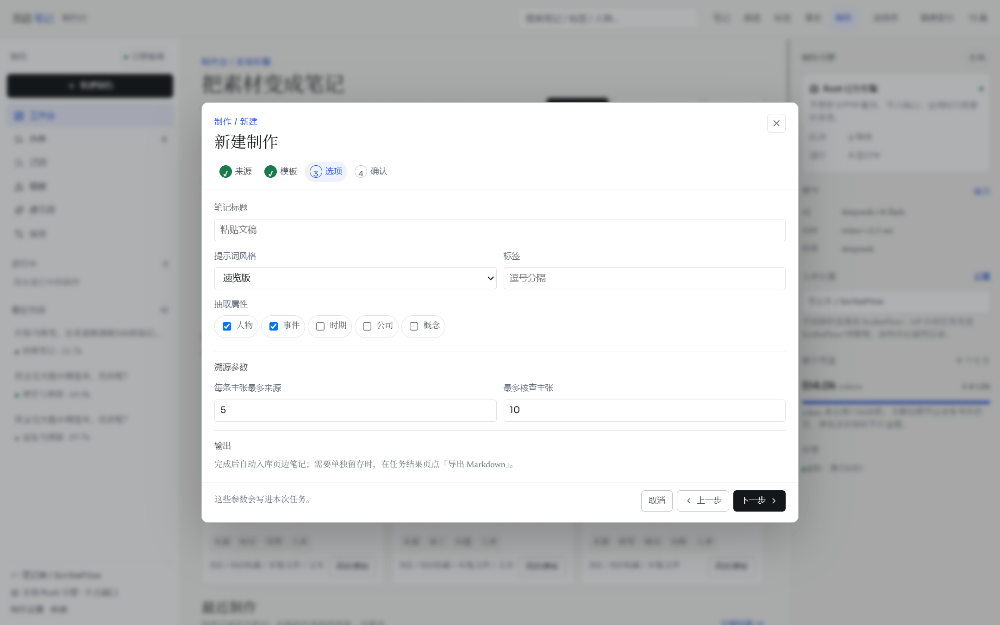
15 联网检索设置
DeepSeek Search、结果数、Key 复用。
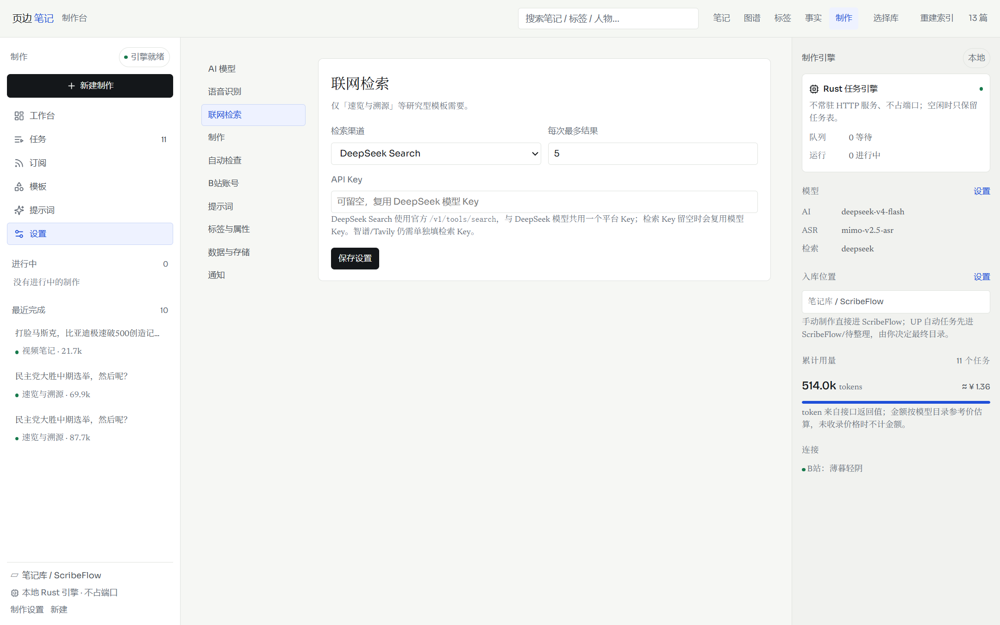